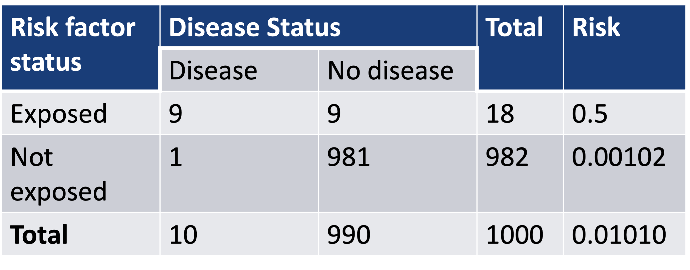
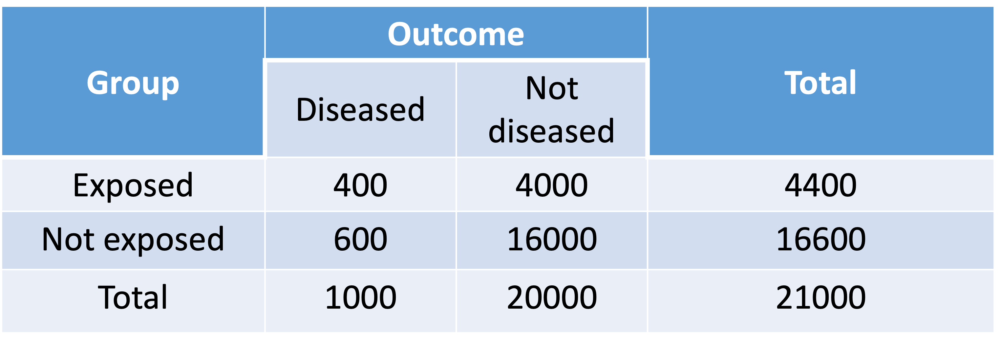
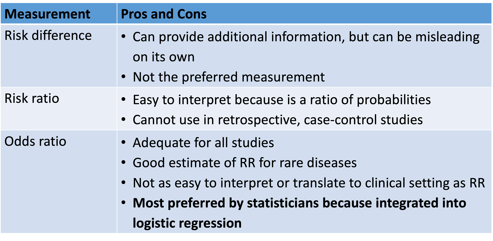
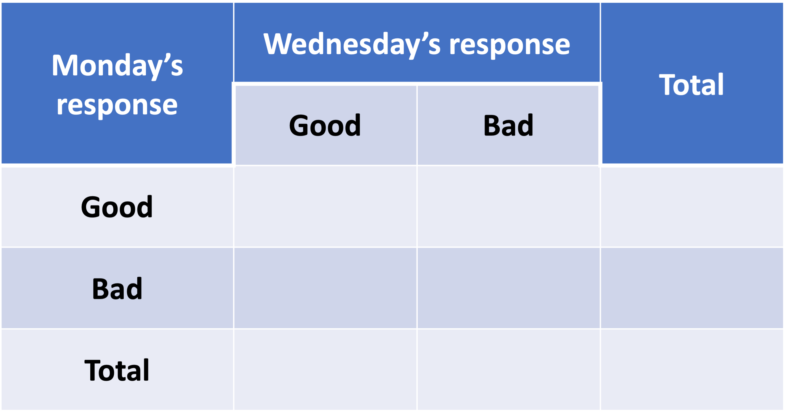
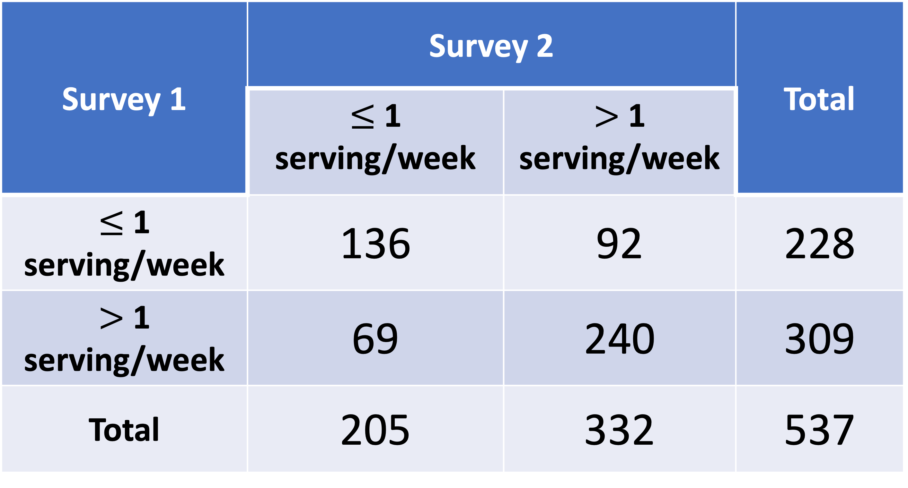

Lesson 4: Measurements of Association and Agreement
Poll Everywhere Question 1
Learning Objectives
- Identify cases when it is appropriate to use risk difference, relative risk, or odds ratios
- Expand work on contingency tables to evaluate the agreement or reproducibility using Cohen’s Kappa
── Attaching core tidyverse packages ──────────────────────── tidyverse 2.0.0 ──
✔ dplyr 1.1.2 ✔ readr 2.1.4
✔ forcats 1.0.0 ✔ stringr 1.5.0
✔ ggplot2 3.4.4 ✔ tibble 3.2.1
✔ lubridate 1.9.2 ✔ tidyr 1.3.0
✔ purrr 1.0.2
── Conflicts ────────────────────────────────────────── tidyverse_conflicts() ──
✖ dplyr::filter() masks stats::filter()
✖ dplyr::lag() masks stats::lag()
ℹ Use the conflicted package (<http://conflicted.r-lib.org/>) to force all conflicts to become errors
Attaching package: 'janitor'
The following objects are masked from 'package:stats':
chisq.test, fisher.test
Attaching package: 'rstatix'
The following object is masked from 'package:janitor':
make_clean_names
The following object is masked from 'package:stats':
filter
here() starts at /Users/wakim/Library/CloudStorage/OneDrive-OregonHealth&ScienceUniversity/Teaching/Classes/S2024_BSTA_513_613/S2024_BSTA_513Last class
Used contingency tables to test and measure association between two variables
- Categorical outcome variable (Y)
- One categorical explanatory variable (X)
We looked at risk difference, risk ratio, and odds ratio to measure association
| Measure | Estimate |
|---|---|
| Risk difference | \[\widehat{RD} = \widehat{p}_1 - \widehat{p}_1 = \dfrac{n_{11}}{n_1} - \dfrac{n_{21}}{n_2}\] |
| Relative risk / risk ratio | \[\widehat{RR}=\dfrac{\hat{p}_1}{\hat{p}_2} = \dfrac{n_{11}/n_1}{n_{21}/n_2}\] |
| Odds ratio | \[\widehat{OR}=\frac{odds_1}{odds_2}=\frac{{\hat{p}}_1/(1-{\hat{p}}_1)}{{\hat{p}}_2/(1-{\hat{p}}_2)}\] |
- Discussed how OR will be an important measurement in logistic regression
A taste of regression for a binary outcome (we will come back to this!!)
logreg = glm(case ~ glucimp, data = SHS, family = binomial)summary(logreg)
Call:
glm(formula = case ~ glucimp, family = binomial, data = SHS)
Coefficients:
Estimate Std. Error z value Pr(>|z|)
(Intercept) -0.52287 0.08969 -5.83 5.55e-09 ***
glucimpNormal -1.53684 0.12982 -11.84 < 2e-16 ***
---
Signif. codes: 0 '***' 0.001 '**' 0.01 '*' 0.05 '.' 0.1 ' ' 1
(Dispersion parameter for binomial family taken to be 1)
Null deviance: 1646.3 on 1663 degrees of freedom
Residual deviance: 1501.3 on 1662 degrees of freedom
AIC: 1505.3
Number of Fisher Scoring iterations: 4library(epiDisplay)Loading required package: foreignLoading required package: survivalLoading required package: MASS
Attaching package: 'MASS'The following object is masked from 'package:gtsummary':
selectThe following object is masked from 'package:rstatix':
selectThe following object is masked from 'package:dplyr':
selectLoading required package: nnet
Attaching package: 'epiDisplay'The following object is masked from 'package:ggplot2':
alphalogistic.display(logreg)
Logistic regression predicting case
OR(95%CI) P(Wald's test) P(LR-test)
glucimp (cont. var.) 0.22 (0.17,0.28) < 0.001 < 0.001
Log-likelihood = -750.6533
No. of observations = 1664
AIC value = 1505.3066Learning Objectives
- Identify cases when it is appropriate to use risk difference, relative risk, or odds ratios
- Expand work on contingency tables to evaluate the agreement or reproducibility using Cohen’s Kappa
Relationship Between RR and OR (1/2)
- Notice that odds ratio is not equivalent to relative risk (or risk ratio)
However, when the probability of “success” is small (e.g., rare disease), \(\widehat{OR}\) is a nice approximation of \(\widehat{RR}\) \[\widehat{OR}=\frac{{\hat{p}}_1/(1-{\hat{p}}_1)}{{\hat{p}}_2/(1-{\hat{p}}_2)}=\widehat{RR}\cdot \frac{1-\widehat{p_2}}{1-\widehat{p_1}}\]
- The fraction in the last term of the above expression approximately equals to 1.0 if \(\widehat{p}_1\) and \(\widehat{p}_2\) BOTH quite small (< 0.1)
The \(\widehat{OR}\) and \(\widehat{RR}\) are not very close to each other in SHS: diabetes not a rare disease
- \(\widehat{OR} = 4.65\)
- \(\widehat{RR} = 3.29\)
Relationship Between RR and OR (2/2)
An example where a disease rare over the whole sample (~1%), but …
- \(\widehat{OR}\) is not a good estimate of \(\widehat{RR}\) in “rare” disease

- \(\widehat{p}_1\) is 0.5: thus \(\widehat{OR}\) and \(\widehat{RR}\) are very different
\[\widehat{RR}=\frac{0.5}{0.00102}=490 \text{ and } \widehat{OR} = \frac{0.5(1-0.5)}{0.00102(1-0.00102)}=981\]
Poll Everywhere Question 2
RR in retrospective case-control study (1/3)
In retrospective case-control studies: we identify cases (patients with the outcome), then select a number of controls (patients without the outcome)
Case-control study to require much smaller sample size than equivalent cohort studies
So we pick out the cases and controls first, then see if there is exposure
However, the proportion of cases in the sample does not represent the proportion of cases in the population
- RR compares probability of the outcome (case) for exposed and unexposed groups
- Number of outcomes has been artificially inflated for case-control study
RR in retrospective case-control study (2/3)
- Assume a 1:2 case-control study summarized in below table:

- Assume we compute the RR as if it is from a cohort study:
\[\widehat{RR}=\frac{\widehat{p_1}}{\widehat{p_2}}=\frac{n_{11}/n_{1+}}{n_{21}/n_{2+}}=\frac{40/80}{60/220}=1.8333\]
RR in retrospective case-control study (3/3)
- In real world, the proportion of controls (not diseased) is typically much higher. Assume the table below shows the proportion in the population in a cohort study

- The estimated RR for the patient population is:
\[\widehat{RR}=\frac{\widehat{p_1}}{\widehat{p_2}}=\frac{400/4400}{600/16600}=2.5152\]
Notes for Odds Ratios
The OR is valid for
- Case-control studies (where the RR is not appropriate)
- Prospective cohort studies
- Cross-sectional studies
It can be interpreted either as…
- Odds of event for exposed vs. unexposed individuals, or
- Odds of exposure for individuals with vs. without the event of interest
- Pay attention to the numerator and denominator for the OR
OR in retrospective case-control study
While we cannot estimate RR from a case-control study, we can still estimate OR for case-control study
OR does not require us to distinguish between the outcome variable and explanatory variable in the contingency table
- AKA: Odds ratio of disease comparing exposed to not exposed is same as odds ratio of being exposed comparing diseased and not diseased
For case-control study where the probability of having outcome is small, the \(\widehat{OR}\) is a nice approximation to \(\widehat{RR}\)
For the 1:2 case-control table: \(\widehat{OR}=\frac{40\cdot160}{40\cdot60} = 2.667\)
Population cohort study: \(\widehat{RR}=2.5152\)
Which measurement should one use?

Learning Objectives
- Identify cases when it is appropriate to use risk difference, relative risk, or odds ratios
- Expand work on contingency tables to evaluate the agreement or reproducibility using Cohen’s Kappa
Measuring Agreement
Still within the realm of contingency tables
What if we are NOT looking at the association between two variables?
What if we want to look at the agreement between two things?
- Answers of same subjects for same survey taken at different times
- Two different radiologists’ assessment of the same X-ray
Cohen’s Kappa statistics: widely used as a measure of agreement
- Example: Reliability studies, interobserver agreement
Poll Everywhere Question 3
Let’s get our mood data down!

Measuring Agreement
If perfect agreement among the two raters/surveys:
- We would expect nonzero entries only in the diagonal cells of the table
\(p_o\) is the observed proportion of complete agreement (concordance)
\(p_E\) is the expected proportion of complete agreement if the agreement is just due to chance
If the \(p_o\) is much greater than \(p_E\), then the agreement level is high.
- Otherwise, the agreement level is low
- Cohen’s Kappa is based on the difference between \(p_o\) and \(p_E\): \[\hat{\kappa}=\frac{p_o-p_E}{1-p_E}\]
- \(\hat{\kappa} = 0\): No agreement between surveys/raters other than what would be expected by chance
- \(\hat{\kappa} = 1\): Complete agreement
Measuring Agreement: Cohen’s Kappa
Point estimate: \[\hat{\kappa}=\frac{p_o-p_E}{1-p_E}\]
- With \(p_o=\ \frac{\sum_{i}\ n_{ii}}{n}\) (sum of diagonals divided by total)
- With \(p_E=\sum_{i}{a_ib_i}\)
- With range of point estimate from \([-1, 1]\)
What’s \(\sum_{i}{a_ib_i}\)?
For \(i\) responses (row/columns), \(a_i\) is proportion of \(i\) response category in first survey and \(b_i\) is proportion of \(i\) response category in second survey (we’ll show this in the example)
- Approximate standard error:
\[ SE_{\widehat{\kappa}} = \sqrt{\frac{1}{{n\left(1-p_e\right)}^2}\left\{p_e^2+p_e-\sum_{i}\left[a_ib_i\left(a_i+b_i\right)\right]\right\}}\]
- 95% Wald confidence interval for \(\widehat{\kappa}\):
\[\widehat{\kappa} \pm 1.96 \cdot SE_{\widehat{\kappa}}\]
Example: Our moods (1/3)
Agreement of surveys
Compute the point estimate and 95% confidence interval for the agreement between our Monday and Wednesday moods.
Needed steps:
- Compute the kappa statistic
- Find confidence interval of kappa
- Interpret the estimate
Example: Our moods (2/3)
Agreement of surveys
Compute the point estimate and 95% confidence interval for the agreement between our Monday and Wednesday moods.
Needed steps:
1/2. Compute the kappa statistic and find confidence interval of kappa
library(epiR)Package epiR 2.0.63 is loadedType help(epi.about) for summary informationType browseVignettes(package = 'epiR') to learn how to use epiR for applied epidemiological analysesmoods = matrix(c(100, 40, 10, 30), nrow = 2, byrow = T)
moods [,1] [,2]
[1,] 100 40
[2,] 10 30epi.kappa(moods, method = "cohen")$kappa est se lower upper
1 0.3661972 0.07617362 0.2168996 0.5154947Example: Our moods (3/3)
Agreement of surveys
Compute the point estimate and 95% confidence interval for the agreement between our Monday and Wednesday moods.
Needed steps:
- Interpret the estimate
The kappa statistic is ____ (95% CI: _____, _____), indicating ______ agreement.
Since the 95% confidence interval does/does not contain 0, we have/do not have sufficient evidence that there is _________ agreement between our mood on Monday and our mood on Wednesday.
Measuring Agreement: Oberved Kappas
Guidelines for evaluating Kappa (Rosner TB)
- Excellent agreement if \(\hat\kappa \geq 0.75\)
- Fair to good agreement if \(0.4 < \hat\kappa < 0.75\)
- Poor agreement if \(\hat\kappa \leq 0.4\)
If \(\hat\kappa<0\), suggest agreement less than by chance
Learning Objectives
- Identify cases when it is appropriate to use risk difference, relative risk, or odds ratios
- Expand work on contingency tables to evaluate the agreement or reproducibility using Cohen’s Kappa
Measurement of Association So Far
Used contingency tables to test and measure association between two variables
- Categorical outcome variable (Y)
- One categorical explanatory variable (X)
We looked at risk difference, risk ratio, and odds ratio to measure association
Such an association is called crude association
- No adjustment for possible confounding factors
- Also called marginal association
But we cannot expand analysis based on contingency tables past 3 variables
- We can get into stratified contingency tables to bring in a 3rd variable
- But I don’t think it’s worth it because regression can bring in (adjust for) many variables
Extra example in case the mood example fails beautifully
Just in case our data doesn’t work out: Beef Consumption in Survey
A diet questionnaire was mailed to 537 female American nurses on two separate occasions several months apart. The questions asked included the quantities eaten of more than 100 separate food items. The data from the two surveys for the amount of beef consumption are presented in the below table. How can reproducibility of response for the beef-consumption data be quantified?

Example: Beef Consumption in Survey (1/3)
Agreement of surveys
Compute the point estimate and 95% confidence interval for the agreement between beef consumption surveys. Similar to question: Are results reproducible for the beef-consumption in the survey?
Needed steps:
- Compute the kappa statistic
- Find confidence interval of kappa
- Interpret the estimate
Example: Beef Consumption in Survey (2/3)
Agreement of surveys
Compute the point estimate and 95% confidence interval for the agreement between beef consumption surveys. Similar to question: Are results reproducible for the beef-consumption in the survey?
Needed steps:
1/2. Compute the kappa statistic and find confidence interval of kappa
library(epiR)
beef = matrix(c(136, 92, 69, 240), nrow = 2, byrow = T)
epi.kappa(beef, method = "cohen")$kappa est se lower upper
1 0.3781906 0.04100635 0.2978196 0.4585616Example: Beef Consumption in Survey (3/3)
Agreement of surveys
Compute the point estimate and 95% confidence interval for the agreement between beef consumption surveys. Similar to question: Are results reproducible for the beef-consumption in the survey?
Needed steps:
- Interpret the estimate
The kappa statistic is 0.378 (95% CI: 0.298, 0.459), indicating fair agreement.
Since the 95% confidence interval does not contain 0, we have sufficient evidence that there is fair agreement between the surveys for beef consumption. The survey is not reliably reproducible since we did not achieve excellent agreement.